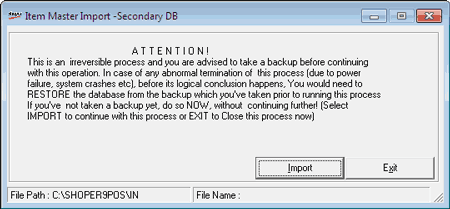

In addition to Primary Database, Shoper 9 can maintain another database called Secondary Database. This database is similar to the primary database in all respects, but it will not be referred for any of the transactions that Shoper 9 carries out. It is also referred as Global Database, with respect to a particular chain location.
The Head Office creates pricing master in the desired file format for any price revision or new inclusion of items. At the Head Office, this database contains the pricing master details of all items generated from the time of inception of the chain. This database is never purged and hence, the details of any item are available permanently. Use this option to load the details of all new inclusions of items sent by HO into the Secondary database.
The process explained is for manual loading of Item Master into the Secondary Database. Auto loading is performed through a synch process defined at HO for the POS as per a schedule.
How to reach: Housekeeping > Data Import > Import into Secondary Db. (s)
The Item Master Import-Secondary DB window is displayed.

Note: It is advisable to keep the main database small and compact, so that the operations are fast and optimized. Use the Secondary data base to retaining the item information which can be consumed in any transaction, if required.
The file imported into POS Primary DB is of the format SHFS02_xxx_scc_nnnnnn.txt and should be present in the Shoper-In folder.
The details of the file components are:
SHFS02: Enables you to identify the file type as Primary/ Secondary,
xxx: Shoper company code of the source of price master, i.e., file source/ Head Office,
scc: Your Shoper Company code/ destination, i.e., POS/ Distributor,
nnnnnn: Sequence number,
.txt: File extension